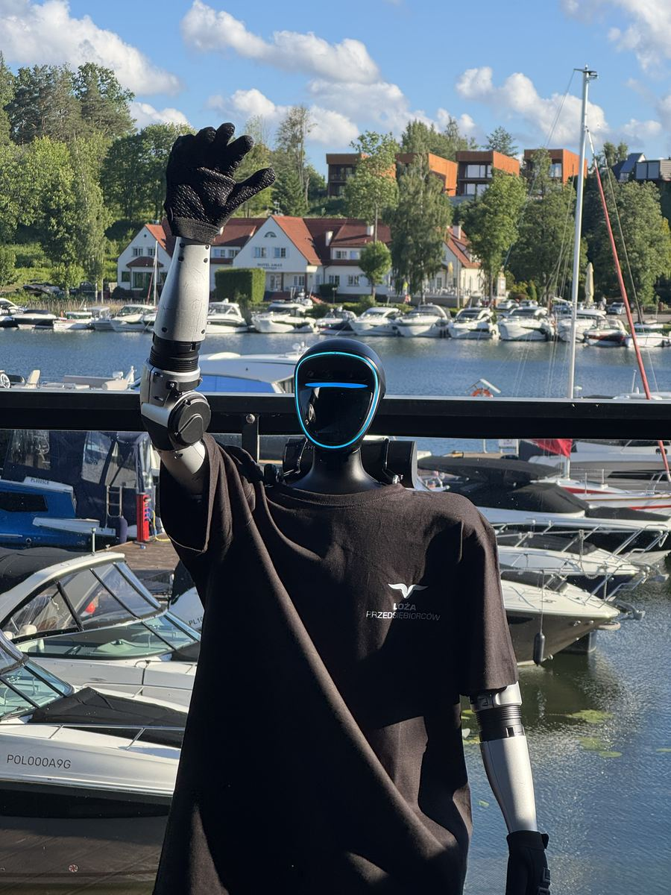

- Startseite
- Roboter für die Firmenfeier
Firmenfeier · Österreich
Roboter für die Firmenfeier
Sommerfest, Jubiläum oder Kick-off: Der Unitree G1 empfängt Ihr Team, hat einen Auftritt im offiziellen Teil und steht danach für Fotos bereit. In ganz Österreich, mit Operator und Transport.

Eine Firmenfeier hat wenige Momente, in denen alle gleichzeitig hinschauen. In genau diesen Momenten arbeitet der Unitree G1: beim Einlass, im offiziellen Teil und danach am Fotopunkt. Dazwischen macht er Pause, und Ihr Abend läuft weiter wie geplant.
Drei Momente, in denen der Roboter arbeitet
Einlass
Die Gäste kommen nach und nach und stehen zunächst mit einem Glas beisammen. Der Roboter begrüßt sie mit Geste und Stimme, gibt die Hand und posiert für die ersten Fotos. Auf seiner Brust sitzen Ihr Logo und ein QR-Code.
Offizieller Teil
Der Roboter sagt die Geschäftsführung an, kündigt Programmpunkte an oder spricht am Mikrofon mit der Moderation. Die Texte dafür entstehen vorher, zusammen mit dem Wissen über Ihr Unternehmen.
Nach dem offiziellen Teil
Eine Choreografie schließt den offiziellen Teil ab. Danach bleibt der Roboter am Fotopunkt, für Bilder mit Teams und Abteilungen. Auf die Tanzfläche geht er nur in Begleitung des Operators.
Beispiel: Firmenjubiläum von 18 bis 22 Uhr
Die Uhrzeiten richten sich nach Ihrem Programm, die Reihenfolge bleibt meist gleich.
| Zeit | Was passiert |
|---|---|
| Vor dem Einlass | Platz am Eingang und auf der Bühne festlegen, Gehen und Choreografie auf dem Boden des Saals testen, kurze Probe mit der Moderation. |
| 18:00 | Begrüßung am Eingang: Stimme, Handschlag, erste Fotos. |
| 18:45 | Technische Pause, während die Gäste Platz nehmen. |
| 19:00 | Offizieller Teil: Der Roboter sagt die Geschäftsführung an und spricht mit der Moderation über die Firmengeschichte. |
| 19:30 | Abendessen. Der Roboter verlässt die Bühne, der Operator wechselt die Akkus. |
| 20:30 | Choreografie, danach Fotopunkt für Teams und Abteilungen. |
| 21:15 | Letzte Fotos und Verabschiedung. Den weiteren Abend übernimmt die Musik. |
Welcher Anlass, welche Rolle
| Anlass | Rolle des Roboters | Übliches Format |
|---|---|---|
| Sommerfest | Empfang und Fotopunkt, bei trockenem Wetter im Freien | einige Stunden |
| Firmenjubiläum | Ansage der Geschäftsführung, Auftritt im offiziellen Teil | einige Stunden |
| Kick-off und Jahresauftakt | Eröffnung, Ansage der Vortragenden, Fotos in den Pausen | ganzer Tag |
| Kundenabend | Gastgeber am Eingang, Auskunft zu Ihrem Angebot | einige Stunden |
| Weihnachtsfeier | Empfang, Foto am Baum, Tanz zur Playlist | einige Stunden |
Was wir von Ihnen und vom Ort brauchen
- Fläche. Einige Quadratmeter ebener Boden für die Show.
- Strom. Eine gewöhnliche Steckdose in der Nähe.
- Programm. Uhrzeiten, Namen für die Ansagen und die Informationen über Ihr Unternehmen, die der Roboter kennen soll.
- Logo. Als Vektordatei, für das Branding auf der Brust.
- Ton. Soll der Roboter im ganzen Saal zu hören sein, läuft seine Stimme über die Tonanlage des Hauses.
Was der Roboter nicht macht
- Er ersetzt weder DJ noch Moderation. Er ist ein Programmpunkt, nicht das Programm des ganzen Abends.
- Er arbeitet nicht ohne Pausen. Auftritt, Fotos, technische Pause: Die Pausen legen wir auf Essen und Reden.
- Er bleibt nie allein in der Menge. Der Operator ist die ganze Zeit bei ihm.
- Er führt im Lärm keine langen freien Gespräche. Auf der Bühne arbeiten wir mit vorbereiteten Texten.
- Er zeigt nicht jede Bewegung in jedem Saal. Was zwischen den Tischen sicher ist, entscheidet der Operator vor Ort.
Einsätze bei Firmenveranstaltungen
- WallStreet 30, Karpacz, 29.–31. Mai 2026. Konferenz mit 2.253 Teilnehmenden im Hotel Gołębiewski. Der Roboter begrüßte Gäste, posierte für Fotos und war zwischen den Vorträgen im Einsatz.
- Unternehmerloge, Nikolaiken. Treffen einer geschlossenen Unternehmergemeinschaft. Der Roboter trat im T-Shirt mit dem Logo des Veranstalters auf.
- Dresdner Schlössernacht, Dresden. Ball in einem Palais: Begrüßung auf dem roten Teppich und Fotos im Ballsaal.


Kosten
Ein Auftritt von einigen Stunden wird nach Ihrem Programm kalkuliert und liegt immer unter dem Tagespreis. Der ganze Veranstaltungstag kostet ab 2.300 € netto. Operator, Transport in ganz Österreich, Branding und Haftpflichtversicherung sind enthalten, bezahlt wird nach der Feier. Alle Formate und Rechenbeispiele stehen auf der Seite Preise.
In ganz Österreich
Wir kommen in jede Stadt Österreichs, ohne Aufschlag und ohne Kilometerlimit. Eigene Seiten gibt es für Wien, Graz, Linz, Salzburg und Innsbruck. Feiert Ihr Unternehmen mit einem festlichen Abend, lesen Sie weiter bei Kongress, Gala und Ball.
Häufige Fragen
Für eine Feier am Abend reicht oft ein Auftritt von einigen Stunden. Er wird nach Ihrem Programm kalkuliert und liegt immer unter dem Tagespreis. Ein ganzer Veranstaltungstag kostet ab 2.300 € netto, Operator, Transport, Branding und Haftpflichtversicherung eingeschlossen.
Ja, bei trockenem Wetter. Er braucht eine ebene Fläche von einigen Quadratmetern. Für den Fall von Regen sollte ein Platz unter Dach vorgesehen sein.
Ja. Namen, Reihenfolge und kurze Texte bekommt er vor der Feier. Auf der Bühne arbeitet er mit diesen vorbereiteten Texten.
Ja. Der Roboter spricht Deutsch und jede andere Sprache und wechselt während der Feier.
So lange, wie es das Programm vorsieht: einige Stunden rund um Empfang und offiziellen Teil oder den ganzen Tag. Zwischen den Auftritten macht er technische Pausen.
Nach der Feier. Die Reservierung erfolgt ohne Anzahlung, die Rechnung kommt nach der Veranstaltung.